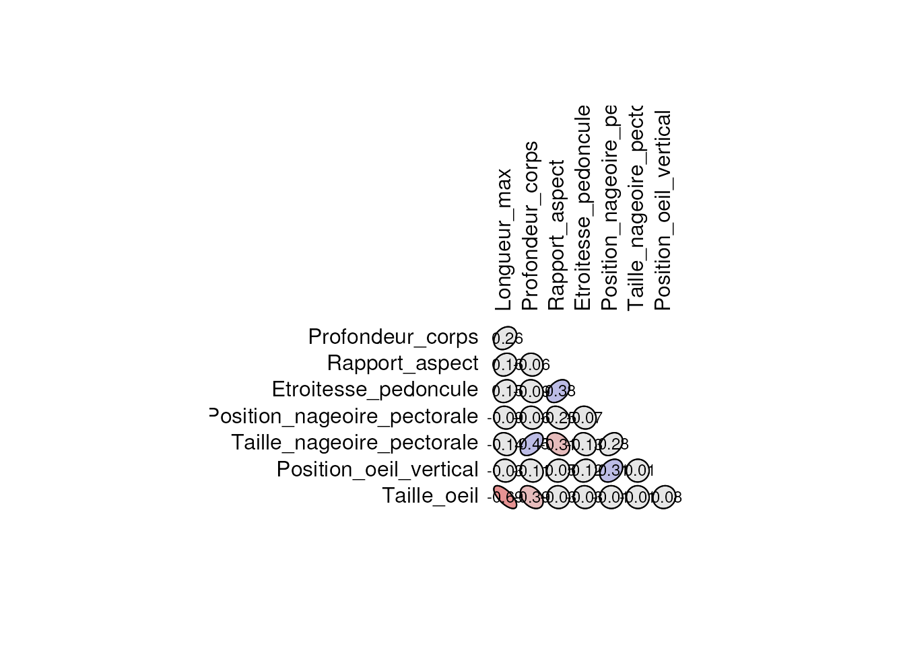
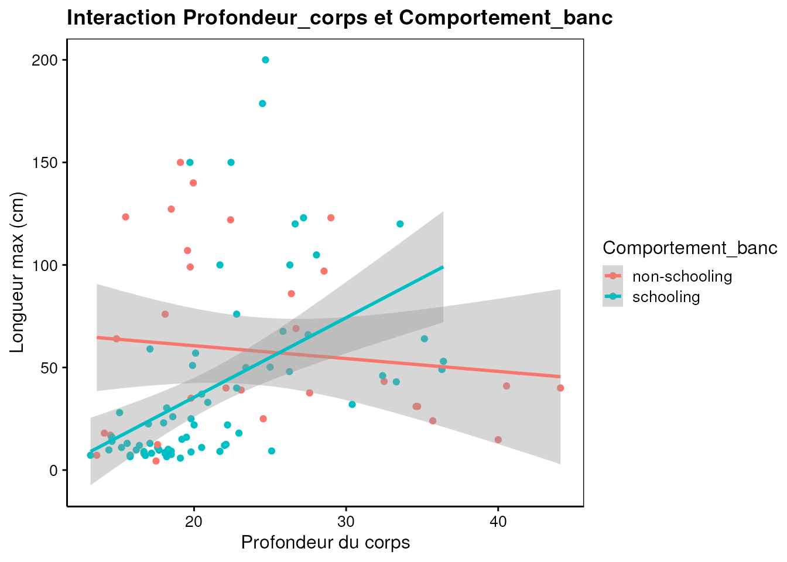
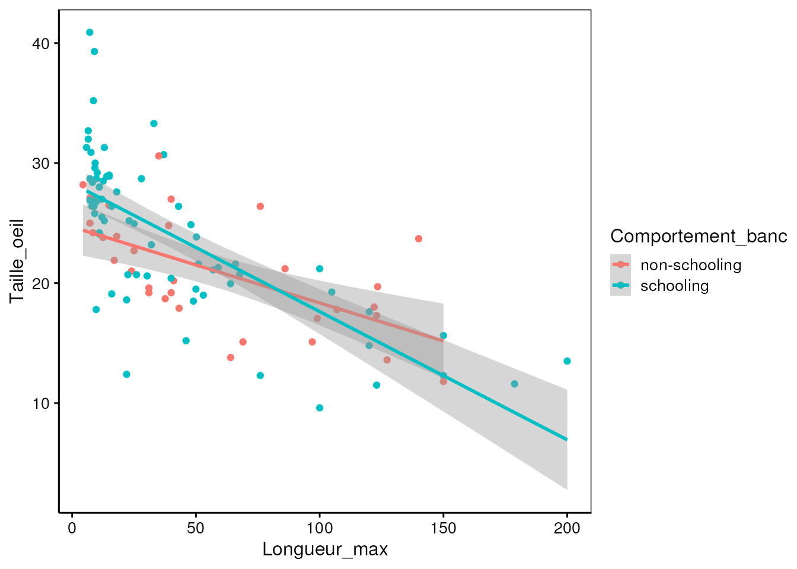

Les poissons des Grands Lacs présentent une grande diversité de morphologies et de comportements, qui influencent leur capacité à se déplacer dans leur environnement et à franchir des obstacles tels que barrages, passes à poissons ou variations de débit. L’ensemble de ces caractéristiques peut conditionner leur performance de nage et donc leurs chances de migration et de survie.
Dans ce travail, nous utilisons les données du FishPass Sortable Attribute Database (Benoit et al., 2023) qui regroupent des traits morphologiques (par ex. longueur maximale, forme du corps, taille et position des nageoires) ainsi que des traits comportementaux (position verticale dans la colonne d’eau, comportement de banc).
But :
Nous explorons ici les relations linéaires entre certaines caractéristiques morphologiques et certains comportements afin d’évaluer dans quelle mesure la morphologie peut expliquer des stratégies de nage et de déplacement.
Matériel et méthodes
…Matériel et méthodes…
Les données utilisées proviennent de la base FishPass Morphology et de la base FishPass Behaviour compilées par Benoit et al. (2023, DOI: https://doi.org/10.5061/dryad.fqz612jwj). Les deux bases ont été fusionnées par espèce (Order, Family, Genus, Scientific.Name, Common.Name), ce qui a permis d’obtenir un jeu unique intégrant à la fois des mesures morphologiques et des informations comportementales pour chaque espèce. Pour ce projet, seules les variables morphologiques et comportementales les plus pertinentes ont été retenues : longueur maximale, profondeur du corps, rapport d’aspect, étroitesse du pédoncule caudal, position et taille des nageoires pectorales, position verticale et taille de l’œil, forme du corps et comportement de banc.
Les données ont été nettoyées et harmonisées : renommage des colonnes, conversion des variables numériques, suppression des lignes avec valeurs manquantes et ajout de labels et unités. Afin d’assurer une représentativité statistique suffisante, seuls les ordres présentant un effectif ≥ 10 individus ont été conservés. Les ordres retenus pour les analyses sont Cypriniformes, Perciformes et Salmoniformes. Les autres ordres, comportant trop peu d’observations, ont été exclus pour garantir la robustesse des résultats.
Les analyses sont réalisées dans R version 4.4.1 (2024-06-14) avec le package {tidyverse} version 2.0.0 et {tabularise} version 0.7.0 pour le traitement et la visualisation des données, et {labelled} version 2.14.0 pour les labels et unités. Le seuil de significativité α est fixé à 5 %.
Analyses
Code
# Lecture des donnéesFish_data <-read.csv("data/Fish_data.csv", header =TRUE, sep =",")# Tableau des premières et dernières lignestabularise$headtail(Fish_data)
Ordre
Longueur_max
Profondeur_corps
Rapport_aspect
Etroitesse_pedoncule
Position_nageoire_pectorale
Taille_nageoire_pectorale
Position_oeil_vertical
Taille_oeil
Vertical_station
Comportement_banc
Cypriniformes
25.00
19.80
1.589080
1.942322
0.2766026
0.1521917
0.5599711
24.95
benthopelagic
schooling
Perciformes
43.00
33.30
1.047050
2.313312
0.3422356
0.1966284
0.5244427
26.40
benthopelagic
schooling
Cypriniformes
22.00
22.20
2.111110
2.452906
0.2295423
0.1536190
0.5408994
12.40
benthopelagic
schooling
Cypriniformes
22.00
20.00
0.883368
2.269096
0.1887432
0.1294095
0.4339694
18.60
benthopelagic
schooling
Cypriniformes
48.00
26.27
1.947350
2.282850
0.2103180
0.1805066
0.4387120
24.87
benthopelagic
schooling
...
...
...
...
...
...
...
...
...
...
...
Perciformes
127.23
18.50
1.388530
3.388259
0.3475585
0.1460195
0.3882117
13.60
pelagic
non-schooling
Perciformes
123.41
15.50
1.293890
2.900798
0.4178307
0.1405814
0.5142834
19.70
benthopelagic
non-schooling
Cypriniformes
30.30
18.20
1.106190
2.205654
0.2663538
0.1606491
0.5093670
20.60
demersal
schooling
Cypriniformes
51.00
19.90
1.851080
3.347581
0.2075585
0.1646135
0.6982149
21.60
demersal
schooling
Salmoniformes
76.00
18.10
1.982110
2.729114
0.3012164
0.1499792
0.5317167
26.40
benthopelagic
non-schooling
Premières et dernières 5 lignes d'un total de 102
Description des données
Code
# Relation entre rapport d’aspect et étroitesse du pédoncule caudalchart(data = Fish_data, Etroitesse_pedoncule ~ Rapport_aspect %col=% Comportement_banc | Ordre) +geom_point(size =3, alpha =0.8) +labs(x ="Rapport d’aspect de la nageoire caudale",y ="Étroitesse du pédoncule caudal",title ="Relation entre la morphologie caudale et le comportement de banc",subtitle ="Comparaison du rapport d’aspect et de l’étroitesse du pédoncule caudal selon l’ordre" )
Le graphique illustre la relation entre le rapport d’aspect de la nageoire caudale et l’étroitesse du pédoncule caudal chez trois ordres de poissons (Cypriniformes, Perciformes et Salmoniformes), en distinguant les espèces grégaires (schooling) des espèces solitaires (non-schooling).
Globalement, on observe que les espèces grégaires(schooling) tendent à présenter des valeurs de rapport d’aspect plus élevées et un pédoncule caudal plus étroit que les espèces solitaires. Cette combinaison morphologique est typique d’une nage rapide, efficace et soutenue, adaptée aux déplacements collectifs dans la colonne d’eau. Elle favorise la réduction de la traînée hydrodynamique et une meilleure endurance, caractéristiques essentielles pour maintenir la cohésion d’un banc en mouvement.
Chez les Cypriniformes, cette tendance apparaît particulièrement nette : les espèces grégaires se concentrent dans une zone du graphique où le pédoncule est plus fin et le rapport d’aspect plus élevé.
Chez les Perciformes, la dispersion est plus grande, ce qui suggère une diversité morphologique plus importante au sein du groupe, reflétant des stratégies de nage variées selon les espèces.
Les Salmoniformes montrent un profil plus homogène, avec des morphologies globalement adaptées à la nage en pleine eau, indépendamment du comportement social, ce qui peut s’expliquer par leurs contraintes migratoires et leur mode de déplacement particulier.
Ce graphique met en évidence que les espèces présentant une morphologie caudale optimisée pour la vitesse et l’endurance c’est-à-dire un pédoncule étroit et un rapport d’aspect élevé sont majoritairement associées à un comportement grégaire. Ces résultats soutiennent l’hypothèse selon laquelle la morphologie influence la stratégie de déplacement, en particulier la capacité à se déplacer collectivement.
… interprétation #2…
Code
chart(data = Fish_data, Profondeur_corps ~ Comportement_banc | Ordre) +geom_boxplot () +labs(x ="Comportement de banc",y ="Profondeur du corps (% TL)",title ="Profondeur du corps selon le comportement de banc et l’ordre")
… interprétation #3…
On voit que selon les ordres de poissons, les espèces qui vivent en banc (schooling) tendent à avoir un corps plus profond que celles qui vivent seules (non-schooling). Cette forme plus profonde aide les poissons à rester stables lorsqu’ils nagent ensemble et à mieux contrôler leurs mouvements dans le banc. Par exemple, chez les Perciformes, la différence est particulièrement visible, alors que chez les Salmoniformes elle est plus faible. Cela suggère que la forme du corps joue un rôle dans la coordination et la cohésion du groupe.
L’analyse des boxplots facettés par ordre montre que la profondeur corporelle (% TL) varie avec le comportement de banc. Pour les Cypriniformes et Perciformes, les individus schooling présentent en moyenne une profondeur corporelle plus élevée que les non-schooling, ce qui pourrait refléter une adaptation morphologique à la nage collective. Cette morphologie est susceptible d’améliorer la stabilité hydrodynamique et la manœuvrabilité lors des déplacements synchronisés. Chez les Salmoniformes, la différence entre les comportements est moins marquée, suggérant une plasticité morphologique moindre ou des contraintes écologiques différentes.
Modélisation
Voici la corrélation de Pearson observée entre les variables quantitatives :
Pour explorer les relations potentielles entre les différentes caractéristiques morphologiques des poissons étudiés, nous avons réalisé une analyse de corrélation de Pearson. Cette méthode permet d’évaluer la force et le sens de l’association linéaire entre deux variables quantitatives.
Matrice de coefficients de corrélation de Pearson r
Longueur_max
Profondeur_corps
Rapport_aspect
Etroitesse_pedoncule
Position_nageoire_pectorale
Taille_nageoire_pectorale
Position_oeil_vertical
Taille_oeil
Longueur_max
1.0000
0.2608
0.1613
0.1515
-0.08967
-0.1419
-0.0332
-0.69467
Profondeur_corps
0.2608
1.0000
-0.0571
-0.0928
-0.06114
0.4508
-0.1140
-0.38962
Rapport_aspect
0.1613
-0.0571
1.0000
0.3779
-0.25301
-0.3119
0.0494
-0.03130
Etroitesse_pedoncule
0.1515
-0.0928
0.3779
1.0000
-0.06962
-0.1302
0.1179
-0.03068
Position_nageoire_pectorale
-0.0897
-0.0611
-0.2530
-0.0696
1.00000
0.2785
0.3092
-0.00728
Taille_nageoire_pectorale
-0.1419
0.4508
-0.3119
-0.1302
0.27853
1.0000
0.0135
-0.01443
Position_oeil_vertical
-0.0332
-0.1140
0.0494
0.1179
0.30917
0.0135
1.0000
0.07805
Taille_oeil
-0.6947
-0.3896
-0.0313
-0.0307
-0.00728
-0.0144
0.0780
1.00000
Code
plot(Fish_data_corr, type ="lower")

La plupart des corrélations entre caractères sont faibles à modérées. Le rapport d’aspect et l’étroitesse du pédoncule caudal montrent une corrélation positive notable (r = 0,38), suggérant une adaptation à la nage rapide. La longueur maximale est fortement négativement corrélée avec la taille de l’œil (r = -0,69), tandis que la profondeur du corps est modérément liée à la taille des nageoires pectorales (r = 0,45).
Warning in set2(resolve(...)): The object is read-only and cannot be modified.
If you have to modify it for a legitimate reason, call the method $lock(FALSE)
on the object before $set(). Using $lock(FALSE) to modify the object will be
enforced in future versions of knitr and this warning will become an error.
Etendue des résidus : [-95.43, 105.6] Ecart type des résidus : 30.85 pour 99 degrés de liberté R2 multiple : 0.5452 - R2 ajusté : 0.536 Statistique F : 59.35 sur 2 et 99 ddl - valeur de p : < 2.22e-16
-Tous les coefficients sont statistiquement significatifs (p-value < au seuil), ce qui signifie que la taille de l’œil et son carré ont un effet significatif sur la longueur maximale. -Étendue des résidus : [-95.43, 105.6], les résidus sont très larges par rapport aux valeurs prédites, ce qui suggère des erreurs importantes pour certaines observations. -Le modèle dans son ensemble est significatif (p-value de Statistique F < au seuil alpha) et explique un peu plus de la moitié de la variation de la longueur maximale(R^2 ajusté 54%), ce qui est correct mais laisse encore beaucoup de variabilité non expliquée.
Code
# Visualisation du modèlechart(Poly1_lm)
Code
# Analyse des résiduschart$residuals(Poly1_lm)
la distribition des residus est très élevé par rapports aux valeurs predites (A)
Les points suivent globalement la ligne,sauf pour les grandes valeurs qui s’écartent, donc la normalité est raisonnable.(B)
La tendance ascendante montre que la variance augmente avec la valeur prédite il y a hétéroscédasticité modérée.(C) -Présence des points influents avec une grande distance de cook et un effet de levier.
Régression linéaire 2
Discussion: Amal #### Modèle linéaire 1
Code
chart(data = Fish_data, Longueur_max ~ Profondeur_corps %col=% Comportement_banc) +geom_point() +geom_smooth(method ="lm", formula = y ~ x, se =TRUE) +labs(title ="Interaction Profondeur_corps et Comportement_banc",x ="Profondeur du corps",y ="Longueur max (cm)")

Code
chart(data = Fish_data, Longueur_max ~ Rapport_aspect %col=% Vertical_station) +geom_point() +geom_smooth(method ="lm", formula = y ~ x, se =TRUE) +labs(title ="Interaction Vertical_station et Rapport_aspect",x ="Rapport d'aspect",y ="Longueur max")
Warning in set2(resolve(...)): The object is read-only and cannot be modified.
If you have to modify it for a legitimate reason, call the method $lock(FALSE)
on the object before $set(). Using $lock(FALSE) to modify the object will be
enforced in future versions of knitr and this warning will become an error.
Etendue des résidus : [-83.51, 69.66] Ecart type des résidus : 30.63 pour 61 degrés de liberté R2 multiple : 0.6339 - R2 ajusté : 0.5919 Statistique F : 15.09 sur 7 et 61 ddl - valeur de p : 2.9145e-11
Warning in set2(resolve(...)): The object is read-only and cannot be modified.
If you have to modify it for a legitimate reason, call the method $lock(FALSE)
on the object before $set(). Using $lock(FALSE) to modify the object will be
enforced in future versions of knitr and this warning will become an error.
Etendue des résidus : [-13.56, 13.35] Ecart type des résidus : 4.417 pour 98 degrés de liberté R2 multiple : 0.5131 - R2 ajusté : 0.4982 Statistique F : 34.43 sur 3 et 98 ddl - valeur de p : 2.7754e-15
-le pvalue de Fstatistique est inférieur au seuil, le modèle est significatif dans son ensemble. -R²ajusté = 0.4982 : le modèle explique environ 50% de la variation de la taille d’œil. -Toutes les variables sont significatives (p < 0.05), donc l’interaction est pertinente. -Les résidus sont raisonnables (étendue [-13.56, 13.35]), suggérant que le modèle est bien ajusté. -La taille d’œil est influencée par la longueur du poisson et par le comportement de banc. L’interaction montre que l’effet de la taille du poisson sur l’œil dépend du comportement de banc : schooling et non-schooling.
Code
chart(data = Fish_data, Taille_oeil ~ Longueur_max %col=% Comportement_banc) +geom_point() +stat_smooth(method ="lm", formula = y ~ x)
-Les poissons non-schooling ont une relation plus linéaire et moins raide. -Les poissons schooling montrent une pente plus prononcée, confirmant l’interaction trouvée dans le modèle (β3).
Code
# Analyse des résiduschart$residuals(Fish_lm2)

L’etendue des residus est elevée par rapport aux valeurs prédites
Les résidus suivent à peu près une distribution normale
Il n’ y a pas de tendance forte, homoscédasticité
Il y a présence d’observations influentes par leur distance de cook
Une observation a un effet de levier important avec une distance de cook influente #### Modèle linéaire généralisé et/ou mixte 1
Discussion: Amal #### Modèle linéaire généralisé et/ou mixte 2
Discusson: Ide ## Conclusion
…vos conclusions ici…
Références
Code source
---title: "___"author: "Amal Abarou, Ide Tchuileng, Christelle Baseka"format: html: code-fold: true code-tools: true toc: trueeditor: visuallang: frbibliography: references.bib---<!--# Ceci est un commentaire. --><!--% Ceci est une consigne. Ne jamais modifier ni déplacer les consignes dans le document ! --><!--% Complétez le titre et le nom des auteurs (auteur1, auteur2, auteur3 et auteur 4) dans l'entête YAML.-->## Introduction et but<!--% Rédigez une courte introduction de 3 ou 5 phrases qui présente vos données. Ajoutez une phrase de but (que vous remanierez éventuellement en fonction des modèles que vous ajouterez plus tard). Vous pouvez citer la bibliographie en utilisant le formatage Markdown ad hoc et en incluant votre référence au format bibtex dans le fichier references.bib. -->... Introduction et but...Les poissons des Grands Lacs présentent une grande diversité de morphologies et de comportements, qui influencent leur capacité à se déplacer dans leur environnement et à franchir des obstacles tels que barrages, passes à poissons ou variations de débit. L’ensemble de ces caractéristiques peut conditionner leur performance de nage et donc leurs chances de migration et de survie.Dans ce travail, nous utilisons les données du *FishPass Sortable Attribute Database* (Benoit *et al.*, 2023) qui regroupent des traits morphologiques (par ex. longueur maximale, forme du corps, taille et position des nageoires) ainsi que des traits comportementaux (position verticale dans la colonne d'eau, comportement de banc).**But** :\Nous explorons ici les **relations linéaires** entre certaines caractéristiques morphologiques et certains comportements afin d’évaluer dans quelle mesure la morphologie peut expliquer des stratégies de nage et de déplacement.## Matériel et méthodes<!--% Indiquez ici d'où viennent les données et aussi quel logiciel (et version) vous utilisez pour les analyses. Inspirez-vous des projets du premier module de SDD II. -->...Matériel et méthodes...Les données utilisées proviennent de la base FishPass Morphology et de la base FishPass Behaviour compilées par Benoit et al. (2023, DOI: <https://doi.org/10.5061/dryad.fqz612jwj>). Les deux bases ont été fusionnées par espèce (Order, Family, Genus, Scientific.Name, Common.Name), ce qui a permis d’obtenir un jeu unique intégrant à la fois des mesures morphologiques et des informations comportementales pour chaque espèce. Pour ce projet, seules les variables morphologiques et comportementales les plus pertinentes ont été retenues : longueur maximale, profondeur du corps, rapport d’aspect, étroitesse du pédoncule caudal, position et taille des nageoires pectorales, position verticale et taille de l’œil, forme du corps et comportement de banc.Les données ont été nettoyées et harmonisées : renommage des colonnes, conversion des variables numériques, suppression des lignes avec valeurs manquantes et ajout de labels et unités. Afin d’assurer une représentativité statistique suffisante, seuls les ordres présentant un effectif ≥ 10 individus ont été conservés. Les ordres retenus pour les analyses sont *Cypriniformes, Perciformes et Salmoniformes.* Les autres ordres, comportant trop peu d’observations, ont été exclus pour garantir la robustesse des résultats.Les analyses sont réalisées dans `r R.version.string` avec le package `{tidyverse}` version `r packageVersion("tidyverse")` et `{tabularise}` version `r packageVersion("tabularise")` pour le traitement et la visualisation des données, et `{labelled}` version `r packageVersion("labelled")` pour les labels et unités. Le seuil de significativité α est fixé à 5 %.## Analyses```{r setup, include=FALSE}# Ceci est nécessaire pour les tests SDD, ne pas utiliser dans un "vrai" projetif (!"tools:tests" %in% search()) source(here::here("tests/tools_tests.R"), attach(NULL, name = "tools:tests"))# Configure Knitr to use AGG as graphic deviceknitr::opts_chunk$set(dev = "ragg_png")# Configuration de l'environnementSciViews::R("model", lang = "fr")```<!--% Importez les données que vous aurez préalablement nettoyées, remaniées et labélisées dans le script R nommé `R/import.R`. -->```{r import}# Lecture des donnéesFish_data <- read.csv("data/Fish_data.csv", header = TRUE, sep = ",")# Tableau des premières et dernières lignestabularise$headtail(Fish_data)```### Description des données<!--% Chaque étudiant réalise et interprète un graphique pertinent en lien avec le but fixé et les modèles qui seront réalisés. Graphique et interprétation de l'étudiant #1 ci-dessous. -->```{r chart1 }# Relation entre rapport d’aspect et étroitesse du pédoncule caudalchart(data = Fish_data, Etroitesse_pedoncule ~ Rapport_aspect %col=% Comportement_banc | Ordre) + geom_point(size = 3, alpha = 0.8) + labs( x = "Rapport d’aspect de la nageoire caudale", y = "Étroitesse du pédoncule caudal", title = "Relation entre la morphologie caudale et le comportement de banc", subtitle = "Comparaison du rapport d’aspect et de l’étroitesse du pédoncule caudal selon l’ordre" )```Le graphique illustre la relation entre le rapport d’aspect de la nageoire caudale et l’étroitesse du pédoncule caudal chez trois ordres de poissons (Cypriniformes, Perciformes et Salmoniformes), en distinguant les espèces grégaires (schooling) des espèces solitaires (non-schooling).Globalement, on observe que les espèces grégaires(schooling) tendent à présenter des valeurs de rapport d’aspect plus élevées et un pédoncule caudal plus étroit que les espèces solitaires. Cette combinaison morphologique est typique d’une nage rapide, efficace et soutenue, adaptée aux déplacements collectifs dans la colonne d’eau. Elle favorise la réduction de la traînée hydrodynamique et une meilleure endurance, caractéristiques essentielles pour maintenir la cohésion d’un banc en mouvement.Chez les Cypriniformes, cette tendance apparaît particulièrement nette : les espèces grégaires se concentrent dans une zone du graphique où le pédoncule est plus fin et le rapport d’aspect plus élevé.\Chez les Perciformes, la dispersion est plus grande, ce qui suggère une diversité morphologique plus importante au sein du groupe, reflétant des stratégies de nage variées selon les espèces.\Les Salmoniformes montrent un profil plus homogène, avec des morphologies globalement adaptées à la nage en pleine eau, indépendamment du comportement social, ce qui peut s’expliquer par leurs contraintes migratoires et leur mode de déplacement particulier.Ce graphique met en évidence que les espèces présentant une morphologie caudale optimisée pour la vitesse et l’endurance c’est-à-dire un pédoncule étroit et un rapport d’aspect élevé sont majoritairement associées à un comportement grégaire. Ces résultats soutiennent l’hypothèse selon laquelle la morphologie influence la stratégie de déplacement, en particulier la capacité à se déplacer collectivement.<!--% Graphique et interprétation de l'étudiant #2 ci-dessous. -->```{r chart2 }```... interprétation #2...<!--% Graphique et interprétation de l'étudiant #3 ci-dessous. -->```{r chart3 }chart(data = Fish_data, Profondeur_corps ~ Comportement_banc | Ordre) + geom_boxplot () + labs( x = "Comportement de banc", y = "Profondeur du corps (% TL)", title = "Profondeur du corps selon le comportement de banc et l’ordre")```... interprétation #3...On voit que selon les ordres de poissons, les espèces qui vivent en banc (schooling) tendent à avoir un corps plus profond que celles qui vivent seules (non-schooling). Cette forme plus profonde aide les poissons à rester stables lorsqu’ils nagent ensemble et à mieux contrôler leurs mouvements dans le banc. Par exemple, chez les Perciformes, la différence est particulièrement visible, alors que chez les Salmoniformes elle est plus faible. Cela suggère que la forme du corps joue un rôle dans la coordination et la cohésion du groupe.*L’analyse des boxplots facettés par ordre montre que la profondeur corporelle (% TL) varie avec le comportement de banc. Pour les Cypriniformes et Perciformes, les individus schooling présentent en moyenne une profondeur corporelle plus élevée que les non-schooling, ce qui pourrait refléter une adaptation morphologique à la nage collective. Cette morphologie est susceptible d’améliorer la stabilité hydrodynamique et la manœuvrabilité lors des déplacements synchronisés. Chez les Salmoniformes, la différence entre les comportements est moins marquée, suggérant une plasticité morphologique moindre ou des contraintes écologiques différentes.*### ModélisationVoici la corrélation de Pearson observée entre les variables quantitatives :<!--% Création ci-dessous du tableau des corrélations de Pearson entre les variables quantitatives en passant par un objet correlation. -->Pour explorer les relations potentielles entre les différentes caractéristiques morphologiques des poissons étudiés, nous avons réalisé une analyse de corrélation de Pearson. Cette méthode permet d’évaluer la force et le sens de l’association linéaire entre deux variables quantitatives.```{r corr, record='ROA', object='corr', arg='dimnames', warning=FALSE}(Fish_data_corr <- correlation(sselect(Fish_data,Longueur_max, Profondeur_corps, Rapport_aspect, Etroitesse_pedoncule, Position_nageoire_pectorale, Taille_nageoire_pectorale, Position_oeil_vertical, Taille_oeil))) |> tabularise()plot(Fish_data_corr, type = "lower")```<!-- Commentez la table des corrélations. -->La plupart des corrélations entre caractères sont faibles à modérées. Le rapport d’aspect et l’étroitesse du pédoncule caudal montrent une corrélation positive notable (r = 0,38), suggérant une adaptation à la nage rapide. La longueur maximale est fortement négativement corrélée avec la taille de l’œil (r = -0,69), tandis que la profondeur du corps est modérément liée à la taille des nageoires pectorales (r = 0,45).<!--% Chaque modèle doit être décrit à l'aide d'un graphique et d'un tableau résumant le modèle. Les équations paramétrées de tous les modèles doivent être également présentes. L'analyse des résidus sera réalisée et interprétée pour chaque modèle. -->#### Régression linéaire 1<!--% Ajustez une régression linéaire simple, multiple ou polynomiale par paire d'étudiants dans cette section (donc, deux modèles pour l'équipe de quatre). -->Amal```{r}# Modèle de régression linéaire polynomial#Poly1_lm <- lm(data = Fish_data, Longueur_max ~ Taille_oeil)Poly1_lm <-lm(data = Fish_data, Longueur_max ~ Taille_oeil +I(Taille_oeil^2))summary_(Poly1_lm) |>tabularise()```-Tous les coefficients sont statistiquement significatifs (p-value \< au seuil), ce qui signifie que la taille de l’œil et son carré ont un effet significatif sur la longueur maximale. -Étendue des résidus : \[-95.43, 105.6\], les résidus sont très larges par rapport aux valeurs prédites, ce qui suggère des erreurs importantes pour certaines observations. -Le modèle dans son ensemble est significatif (p-value de Statistique F \< au seuil alpha) et explique un peu plus de la moitié de la variation de la longueur maximale(R\^2 ajusté 54%), ce qui est correct mais laisse encore beaucoup de variabilité non expliquée.```{r}# Visualisation du modèlechart(Poly1_lm)``````{r}# Analyse des résiduschart$residuals(Poly1_lm)```- la distribition des residus est très élevé par rapports aux valeurs predites (A)- Les points suivent globalement la ligne,sauf pour les grandes valeurs qui s'écartent, donc la normalité est raisonnable.(B)- La tendance ascendante montre que la variance augmente avec la valeur prédite il y a hétéroscédasticité modérée.(C) -Présence des points influents avec une grande distance de cook et un effet de levier.#### Régression linéaire 2<!--% Ajustez une régression linéaire simple, multiple ou polynomiale par paire d'étudiants dans cette section (donc, deux modèles pour l'équipe de quatre). -->Discussion: Amal \#### Modèle linéaire 1<!--% Construisez un modèle linéaire par paire d'étudiants dans cette section. -->```{r}chart(data = Fish_data, Longueur_max ~ Profondeur_corps %col=% Comportement_banc) +geom_point() +geom_smooth(method ="lm", formula = y ~ x, se =TRUE) +labs(title ="Interaction Profondeur_corps et Comportement_banc",x ="Profondeur du corps",y ="Longueur max (cm)")``````{r}chart(data = Fish_data, Longueur_max ~ Rapport_aspect %col=% Vertical_station) +geom_point() +geom_smooth(method ="lm", formula = y ~ x, se =TRUE) +labs(title ="Interaction Vertical_station et Rapport_aspect",x ="Rapport d'aspect",y ="Longueur max")``````{r record='RODFS'}#Fish_lm <- lm(data = Fish_data, Longueur_max ~ Taille_oeil + Profondeur_corps + Vertical_station + Profondeur_corps * Comportement_banc + Vertical_station * Rapport_aspect) #summary(Fish_lm) |> tabularise()Fish_lm1 <- lm(data = Fish_data, subset = Vertical_station %in% c("pelagic", "benthopelagic"), Longueur_max ~ Taille_oeil + Profondeur_corps + Vertical_station + Profondeur_corps * Comportement_banc + Vertical_station * Rapport_aspect)summary_(Fish_lm1) |> tabularise()``````{r analyse residus}chart$residuals(Fish_lm1)```Discussion: Ide \#### Modèle linéaire 2<!--% Construisez un modèle linéaire par paire d'étudiants dans cette section. -->```{r}Fish_lm2 <-lm(data = Fish_data, Taille_oeil ~ Longueur_max * Comportement_banc )summary_(Fish_lm2) |>tabularise()```-le pvalue de Fstatistique est inférieur au seuil, le modèle est significatif dans son ensemble. -R²ajusté = 0.4982 : le modèle explique environ 50% de la variation de la taille d’œil. -Toutes les variables sont significatives (p \< 0.05), donc l’interaction est pertinente. -Les résidus sont raisonnables (étendue \[-13.56, 13.35\]), suggérant que le modèle est bien ajusté. -La taille d’œil est influencée par la longueur du poisson et par le comportement de banc. L’interaction montre que l’effet de la taille du poisson sur l’œil dépend du comportement de banc : schooling et non-schooling.```{r}chart(data = Fish_data, Taille_oeil ~ Longueur_max %col=% Comportement_banc) +geom_point() +stat_smooth(method ="lm", formula = y ~ x)```-Les poissons non-schooling ont une relation plus linéaire et moins raide. -Les poissons schooling montrent une pente plus prononcée, confirmant l’interaction trouvée dans le modèle (β3).```{r}# Analyse des résiduschart$residuals(Fish_lm2)```- L'etendue des residus est elevée par rapport aux valeurs prédites- Les résidus suivent à peu près une distribution normale- Il n' y a pas de tendance forte, homoscédasticité- Il y a présence d'observations influentes par leur distance de cook- Une observation a un effet de levier important avec une distance de cook influente \#### Modèle linéaire généralisé et/ou mixte 1<!--% Élaborez un modèle linéaire généralisé ou mixte par paire d'étudiants dans cette section. -->Discussion: Amal \#### Modèle linéaire généralisé et/ou mixte 2<!--% Élaborez un modèle linéaire généralisé ou mixte par paire d'étudiants dans cette section. -->Discusson: Ide \## Conclusion<!--% Lorsque toutes les analyses sont réalisées, terminez ce bloc-notes avec 3 à 6 phrases de conclusion en rapport avec ce que vous avez observé dans vos analyses. Quels sont les modèles les plus pertinents que vous retenez ? -->...vos conclusions ici...## Références<!--% N'indiquez rien ci-dessous. Quarto se chargera de rajouter vos références bibliographiques automatiquement. -->